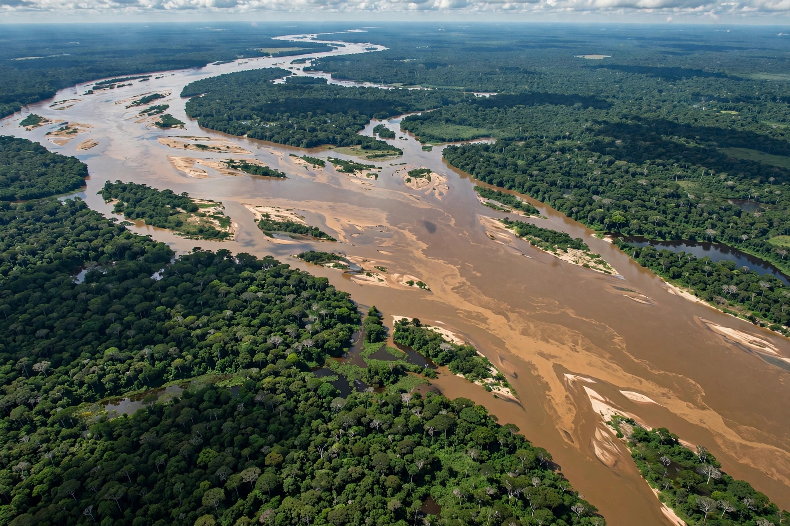

| Pará | |
 | |
| Country | Brazil |
|---|---|
| Capital | Belém |
| Area | 1,245,870 km² (2nd largest state) |
| Population | about 8.1 million |
| Region | North |
Pará is a state in northern Brazil, the second largest by area, occupying much of the lower Amazon basin. Its capital is Belém, located near the mouth of the Amazon River. The name comes from the Pará River, whose name derives from a Tupi word meaning "river-sea".
The Amazon River crosses the state from west to east, joined by major tributaries including the Tapajós, Xingu and Tocantins rivers. At the river's mouth lies Marajó Island, one of the largest fluvial islands in the world, home to the pre-Columbian Marajoara culture. Most of the state is covered by Amazon rainforest, though the southeast has suffered extensive deforestation.
Belém was founded in 1616 by the Portuguese to defend the Amazon mouth. The state participated in the Amazon rubber boom of the late 19th and early 20th centuries, and in 1823 Pará adhered to independent Brazil. The Cabanagem revolt (1835–1840) was one of the most violent uprisings of Brazil's imperial period.
Pará is a major producer of iron ore (from the Carajás range, one of the world's largest deposits), bauxite and aluminium, and of açaí berries, of which it is Brazil's leading source. The Tucuruí Dam on the Tocantins is one of the largest hydroelectric plants in the world.